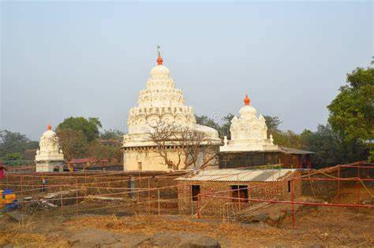

Kolaba Fort हा महाराष्ट्रातील Alibaug जवळ अरबी समुद्रात असलेला एक प्रसिद्ध ऐतिहासिक किल्ला आहे. हा किल्ला मराठा साम्राज्याच्या काळात समुद्री संरक्षणासाठी खूप महत्त्वाचा होता. हा किल्ला Chhatrapati Shivaji Maharaj यांनी 17व्या शतकात मराठा नौदल मजबूत करण्यासाठी बांधला होता. हा किल्ला समुद्रात असल्यामुळे त्याची रचना अत्यंत मजबूत आणि रणनीतिक पद्धतीने केली गेली आहे. पुढे Kanhoji Angre यांनी या किल्ल्याचा वापर मराठा आरमाराच्या मुख्य तळाप्रमाणे केला. त्यामुळे हा किल्ला मराठा नौदलाच्या इतिहासात खूप महत्त्वाचा मानला जातो. किल्ल्याच्या आत तटबंदी, मजबूत बुरुज, जुन्या तोफा आणि ऐतिहासिक अवशेष पाहायला मिळतात. येथे एक गणपती मंदिर देखील आहे जे स्थानिक लोकांसाठी श्रद्धेचे स्थान आहे. सर्वात खास गोष्ट म्हणजे या किल्ल्यात समुद्रात असूनही एक गोड पाण्याची विहीर आहे, जी आजही लोकांसाठी आश्चर्यकारक आहे. हा किल्ला भरती-ओहोटी (tide) वर अवलंबून आहे. Low tide वेळी लोक चालत किल्ल्यावर जाऊ शकतात, तर high tide वेळी बोटीचा वापर करावा लागतो. त्यामुळे हा किल्ला साहसी पर्यटकांसाठी खूप आकर्षक ठरतो. आज Kolaba Fort एक प्रसिद्ध पर्यटन स्थळ आहे. इतिहासप्रेमी, विद्यार्थी आणि फोटोग्राफर्ससाठी हे एक उत्तम ठिकाण आहे. समुद्राचे सुंदर दृश्य, ऐतिहासिक रचना आणि शांत वातावरण यामुळे हा किल्ला महाराष्ट्रातील महत्त्वाच्या पर्यटन स्थळांपैकी एक आहे.
